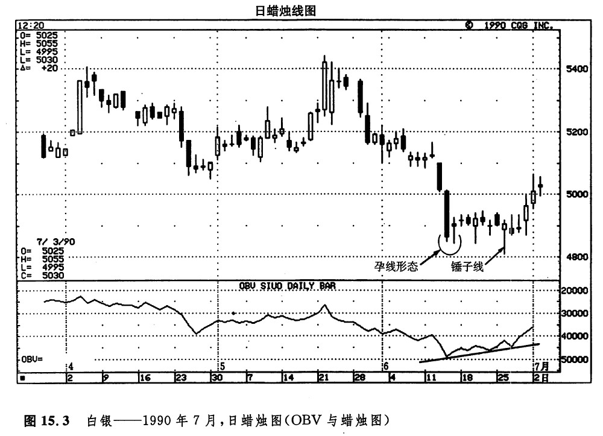

图15.3所示为白银市场。在6月13日沉重的抛售行情之后，跟着出现了一个小小的实体。这就形成了一个孕线形态，它将强烈的下降趋势转化为横向延伸趋势。此后数周，市场就处在该水平交易区间中。在这个期间，OBV在上升，反映了一个看涨的筹码搜集过程。6月25日，市场创出了新低，但是这一新低水平未能维持下去，结果形成了一根锤子线。OBV的正面背离现象、熊方无力维持新低水平，以及这根锤子线，三个方面归纳起来，标志着一个近期市场底部的形成。

下一篇：即时交易量（TM）
上一篇：
权衡交易量（OBV）